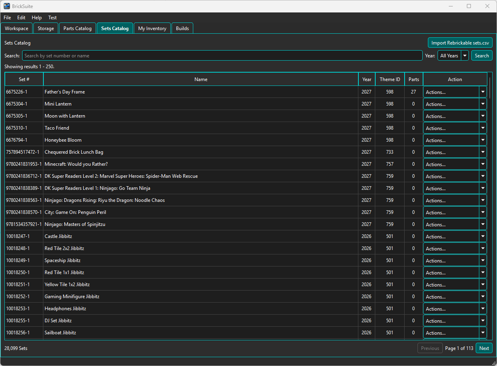
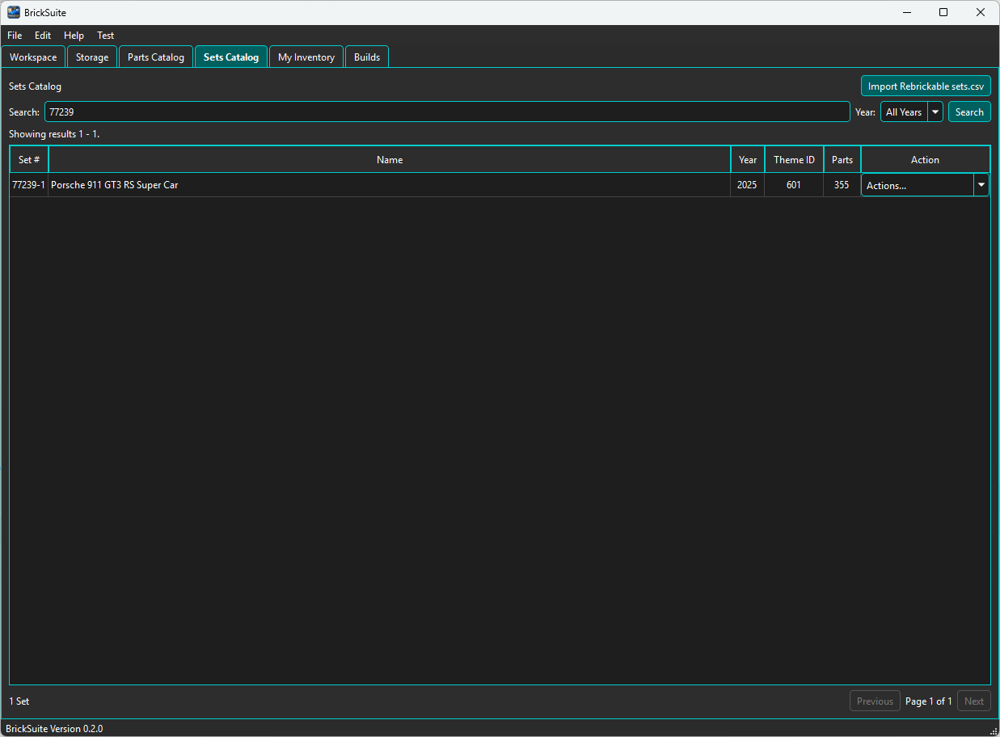
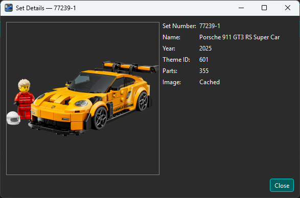

The Sets Catalog is BrickSuite's local reference library of Rebrickable Set data. Use it to find a Set by number or name, review its reference information, and create a BrickSuite Build from the Set.
The catalog is reference data. A Set does not become something BrickSuite is actively managing until you create a Build from it.
The main table shows the Set number, name, year, Rebrickable Theme ID, part count, and an Actions menu.

The summary at the lower left shows the number of Sets matching the current search and year filter. The pager at the lower right moves through larger result sets.
In the example above, the local catalog contains 28,099 Sets across 113 pages. The catalog count can change when newer Rebrickable reference data is imported.
Enter a Set number or part of a Set name in Search. You can also select a year to narrow the results before choosing Search.

Searching for 77239 identifies Set 77239-1 — Porsche 911 GT3 RS Super Car, released in 2025. The catalog shows its Rebrickable Theme ID as 601 and its reference part count as 355.
Choose Details from the Set's Actions menu to inspect the available reference information.

The Set Details dialog shows the Set number, name, year, Theme ID, part count, and cached Set image. BrickSuite caches reference images locally so they can be reused after they have been retrieved.
The part count shown here is catalog reference information. The detailed Build workflow uses the Set's requirements when BrickSuite prepares the inventory work needed to assemble it.
Choose the Set's Build action when you want BrickSuite to begin managing that Set as an actual project. BrickSuite confirms the Set and the inventory mode before creating the Build.

In the example shown, BrickSuite will create a Build for 77239-1 — Porsche 911 GT3 RS Super Car using Complete Set inventory mode. The new Build begins with status Planned.
Choose Yes to create the Build or No to leave the Sets Catalog unchanged.
After creation, continue on the Builds page. From there, BrickSuite can manage requirements, inventory allocation, missing parts, pulling pieces, Build completion, and later lifecycle operations.
The distinction between the two areas is important:
Sets Catalog What Sets exist? What reference information is known about a Set? Builds Which Set or MOC am I actually planning or assembling? What pieces does it require? Which pieces are available? Which pieces are missing? What inventory has been allocated or pulled?
Creating a Build does not remove or alter the Set in the catalog. The catalog remains the reference source while the Build records your working state.
Use Import Rebrickable sets.csv to update BrickSuite's local Sets Catalog from a Rebrickable Sets CSV file. This keeps normal catalog browsing local while allowing newer Set reference data to be incorporated into BrickSuite.
This reference-data import is separate from importing your owned loose-parts inventory.